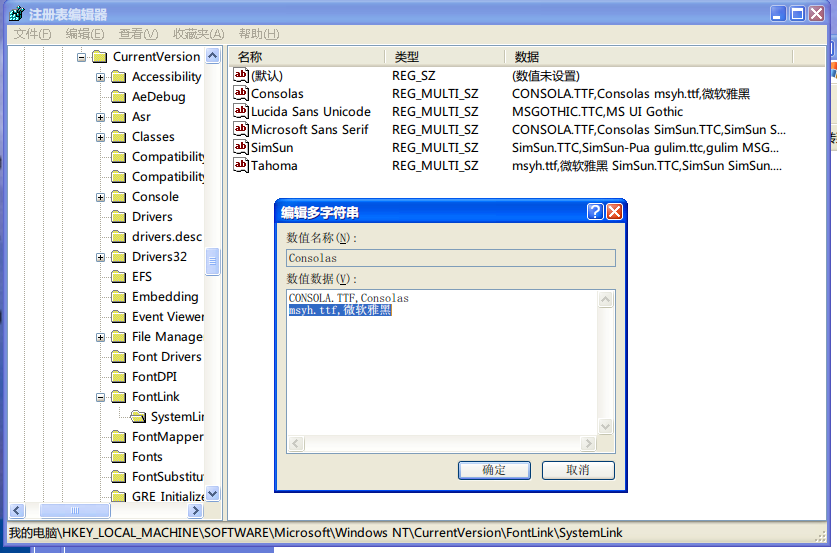

Test
Table of Contents
- 1. Programing
- 2. Tools
- 2.1. tool command memo command
- 2.2. cli tools
- 2.3. emacs
- 2.3.1. DONE dired 使用 #pMyth
- 2.3.2. DONE multi select in emacs #pMyth
- 2.3.3. elisp tutorial elisp
- 2.3.4. DONE tabbar
- 2.3.5. DONE tabbar like awesome, move tab left emacs
- 2.3.6. DONE emacs chinese input emacs eim input
- 2.3.7. org note 整理 emacs org
- 2.3.8. DONE org 表格, keison.el tab org emacs keison
- 2.3.9. DONE emacs sdcv sdcv
- 2.3.10. org agenda view agenda
- 2.3.11. 常见任务
- 2.3.12. emacs 和 vim 编辑远程文件
- 2.3.13. M-x command
- 2.3.14. spacemacs
- 2.3.15. spacemacs rocks
- 2.4. octopress + github + orgmode = blog
- 2.5. at 命令 at
- 2.6. crontab 注意
- 2.7. Warcycling
- 2.8. DONE mencoder 转换 mencoder
- 2.9. DONE rime 定制 rime wubi
- 2.10. sublime skills
- 2.11. DONE 封装工具使用 jys
- 2.12. tmux 使用 tmux
- 2.13. mednafen (nes 游戏模拟器的使用)
- 3. task with tools
Programing
c#学习书籍
C#入门经典 C#本质论 C#高级编程（第六版）清华大学出版社 C#框架设计 CLR via C#
.NET 学习： asp.net 技术内幕 《你必须知道的.net》 programming in ASP.NET3.5（此书讲解.NET 控件比较详细）；ASP.NET 入门经典（毕竟是红皮书系列，很多我们忽略的知识点里面都有所讲到，陪着前者一起阅读）
linux 内核情景分析 :kernel:
微内核：仅提供进程间通信功能，其它内核功能用进程实现。
宏内核：文件系统，内存管理，进程管理等。
wxpython 总结
问题包括：
- 调试方法
- splash 全屏
- splash 时空格键直接对后端程序起作用
- 调用系统字体
- 好看的 button
- html 显示文字块
- button 与 notebook 的布局处理
- notebook 内部 btn_back 关闭当前窗口
- notebook tab 大小调整
- notebook 中的字体调整
- staticboxsizer 的 label 居中，字号调整
解决：
- app 调用时输出重定向到终端
app = MyApp(redirect=False) app.MainLoop()
- 用 ScreenDC 和 Image.Scale 方法缩放图片，
直接用 splashScreen 不用加了 gauge 的个性化 splash
img1 = wx.Image(‘splash.jpg’, wx.BITMAP_TYPE_ANY) dc = wx.ScreenDC() dw, dh = dc.GetSize() img2 = img1.Scale(dw, dh) bmp = wx.BitmapFromImage(img2)
self.splash = wx.SplashScreen(bmp, wx.SPLASH_CENTRE_ON_SCREEN|\ wx.SPLASH_TIMEOUT, 5000, self) wx.Yield()
后端用一个看不见的 button，或者将 splashscreen 和窗口写一起 self.btn_hide=buttons.GenButton(self,-1,“”) self.btn_hide.SetBackgroundColour(wx.Colour(236,233,216)) self.btn_hide.SetSize((1,1))
import wx.lib.agw.aquabutton as AB face = “SimHei” prog_font = wx.TheFontList.FindOrCreateFont(20, wx.FONTFAMILY_DEFAULT, wx.FONTSTYLE_NORMAL, wx.FONTWEIGHT_NORMAL, False, face) bmp_on = wx.Bitmap(‘online32.png’, wx.BITMAP_TYPE_PNG) self.btn_online = AB.AquaButton(self, -1, bmp_on, u"在线监测") self.btn_online.SetFont(prog_font)
- colorimpact 调颜色，SetFonts 字体区别一般字体和
里面字体。不起作用。 self.html.SetFonts(“simhei”,“simkai”) self.html.SetPage( html_text2)
1、用网线连接上装工况分析仪主机与监测计算机；
GridBagSizer gsizer= wx.GridBagSizer(2, 2) gsizer.Add(hsizer, (1,0), flag=wx.EXPAND) gsizer.Add(self.btn_back, (2,1))
self.statusBar=self.CreateStatusBar() self.Name = “monitor” on_frame = wx.FindWindowByName(“monitor”) on_frame.Close()
- self.SetTabSize((1500,30))
- font = wx.Font(12, wx.FONTFAMILY_DEFAULT,wx.FONTSTYLE_NORMAL,wx.NORMAL) self.label.SetFont(font)
bash :shell:bash:
shell 脚本中对空格有严格的规定。如变量赋值，在=前后不能有空格。而 test 命令 [] 必须有空格隔开操作符。 第 7 章 条件语句
sort -k2n # 按照第二域数字排序
basename file.png .png # 获得基本文件名
glxgears # 查询显卡性能
sudo dpkg-reconfigure xserver-xorg -phigh # 自动搜索配置 xorg.conf
screen -dmS session_name command
mkdir -pv $LFS/{proc,sys}
ssh-keygen -f "/home/myth/.ssh/known_hosts" -R 192.168.1.1
history |awk '{print $2}' | sort | uniq -c | sort -rn| head -10 # 最常用命令
cal 1 2008 # "此命令显示一年中特定月份的日历"
date -d fri # "显示本周或下周星期五的日期"
date --date='25 Dec' +%A # "告诉你今年圣诞节是星期几"
du -s * | sort -k1,1rn | head # "显示当然目录占用空间排名"
^foo^bar # 将上一条命令中的 foo 替换为 bar，并执行。（参考 bashcook 18 章详细解释）
cp filename{,.bak} # 快速备份或复制文件。
<file:///data/doc/cli/10> 个最酷的命令.txt
ahk
修改 AutoHotKey 默认代码编辑器为 Gvim
HKEY_CLASSES_ROOT\AutoHotkeyScript\Shell\Edit\Command
C:\Program Files (x86)\Vim\vim73\gvim.exe %1
cmd
- F7, Alt-Enter
- dir /a:-hrsda /o:sned
- ntsd -c q -p PID
- sfc
- tasklist /svc
Tools
tool command :memo:command:
info command :info:
| n,p | next/previous same level |
| u | upper level |
| [,] | next/previous level |
| m | menu in this level |
| L | history |
| r | forword |
| d | directory |
| t | top |
| i | index |
| f | cross ref |
| l | last level |
xrandr :xrandr:
xrandr -q
xrandr --output LVDS --auto --output VGA-0 --mode 800x600 --same-as LVDS
xrandr --output VGA-0 --off
muse :muse:
| C-c ! a | add footnotes |
| C-c C-b | Find all pages that link to this page |
| C-< | Decrease the indentation of the list item at point |
fdisk & mkfs :fdisk:
fdisk /dev/sdb np1,a1,t6,np2,+13M,w(q)
mkfs.vfat -F 16 -n liveusb /dev/sdb1
sudo mkfs.ext2 -b 4096 -L casper-rw /dev/sdb2
Archive :ARCHIVE:
cli tools
- fbterm/tmux/screen
- download: wget/curl/axel/aira2/rtorrent
- make
- imagemagik
- cal
- bc
- ranger/mc
- moc/mpd+ncmpcpp
- vim
- htop
- mutt
shownews/raggle/newsbeuter
ibus-fbterm(framebuffer)
expect
- fbgrab
- fbida/feh/zgv
- finch/centerICQ/freetalk/naim
irssi
fbdev
我以前被人误导，也一直认为在 tty 终端下只能以字符方式看视频，但是直到有一天，我无意中了解到了有 framebuffer 这个东东！！！！ 无意中看到 mplayer 的视频输出里有 fbdev！！！！ 于是在开启了 framebuffer 的 tty 下。mplayer -vo fbdev2 “我要看的视频” 我看到了神马？！
emacs
DONE dired 使用 :#pMyth:
- * 标记, % g REGEXP
标记所有文件 内容 匹配到给定的正则表达式的文件。 - # ~ &, 标记 D. % d REGEXP
正则标记 - * c D t 把当前所有 D 标签换为 t 标签
- M-( 或 * ( dired-mark-sexp
- % R \.[^.]*$
.1\& 正则重命名, \&代替匹配部分 - k 过滤
- w 复制文件名，如果通过 C-u 传递一个前缀参数 0，则复制决定路径名， 如果只是 C-u 则复制相对于 dired 当前目录的相对路径。
- = diff
- I 把当前文件以 info 文档的格式打开。
- N 把当前文件以 man 格式打开(使用 WoMan)。
- Y 为所有标记的文件创建一个到指定目录的相对符号连接(即使用相对路径进行引用，而不是绝对路径)。
- B 对 Elisp 文件进行 Byte compile。
- A 对文件内容进行正则表达式搜索，搜索会在第一个匹配的地方停下，然后 可以使用 M-, 搜索下一个匹配。
- Z 压缩或解压文件。
DONE multi select in emacs :#pMyth:
希望实现多次复制，一次粘贴的效果。可用 M-y 作为折中方案。
elisp tutorial :elisp:
(set ‘num 7) ;给变量 num 赋值 7 (set 'num (+ num 1)) ;num=num+1
defun 定义函数，最多可有 5 个参数。有可选的 interactive 参数才能 M-x 或设置快捷键。
defun 中常用到的其它 special form: if, let, save-excursion
<eintr:append-to-buffer>
DONE tabbar
State “DONE” from “DOING”
:ARCHIVE_TIME: 2011-08-06 六 21:57
for tabbar (global-set-key [(super O)] ‘zx-other-buffer) (global-set-key [(super K)] 'kill-this-buffer) (global-set-key [(super N)] 'zx-buffer-move-right) (global-set-key [(super P)] 'zx-buffer-move-left)
(defun zx-other-buffer () (interactive) (switch-to-buffer (other-buffer (current-buffer) t))) (defun zx-buffer-move-right () (interactive) (tabbar-move (tabbar-current-tabset) 1)) (defun zx-buffer-move-left () (interactive) (tabbar-move (tabbar-current-tabset) -1))
DONE tabbar like awesome, move tab left :tabbar:emacs:
- State “DONE” 阅读 tabbar.el 的开始文档，找到相应的函数，再自定义可设快捷键函数
:ARCHIVE_TIME: 2010-12-11 六 20:06
DONE emacs chinese input :emacs:eim:input:
- State “DONE” from “DOING”
- State “DOING” from “TODO”
use fcitx-rime
/etc/environment, LC_CTYPE="zh_CN.utf-8"use ibus-rime without set LC_CTYPE use ibus.el, have some bugs, not verified
(require 'ibus) (add hook 'after-init-hook 'ibus-mode-on)- use eim
按主页提示, 修改原有设置, 效果不错.
功能包括添加自定义词
~/.eim/mywb.txt, 临时输入英文, 以及 gtk 下 tooltip.
org note 整理 :emacs:org:
org 提升
project conf, one click publish all :publish:
refile, classified notes in multi files :refile:
DONE s5 slide :slide:
- State “DONE” from “DOING”
directly input latex fomula
fig table, caption label ref
DONE see fig directly
- State “DONE” from “DOING”
org-toggle-inline-imagesCANCLE export to markdown
State “CANCLE” from “DOING” this is a feature supported by 24.4, and now ubuntu only supports to 24.3.
C-c C-e m m M-x org-md-export-as-markdown
Org-mode version 8.0 or later
(eval-after-load “org” ‘(require 'ox-md nil t))
跨平台
DONE 网盘同步
- State “DONE” from “DOING”
DONE github :github:ssh:
State “DONE” from “TODO”
ssh-keygen -t rsa -C "heihe_yellow@163.com" ssh -T git@github.com git config --global user.name "remerci" git config --global user.email "heihe_yellow@163.com" git init git add . git remote add zxorg git@github.com:remerci/zx-org-notes.git git push -u zxorg master git remote remove zxorg ls .gitignore git remote add zxorg git@github.com:remerci/zx-org-notes.git git push zxorg master
wiz html
办公同结构空内容, 便于增加
DONE org 表格, keison.el :tab:org:emacs:keison:
- State “DONE” from “TODO”
- 按网上配置, 中英文对齐问题已经解决.
keison 是据说比 table.el 好用的表格生成扩展, 日本人开发, 设置如下:
(if window-system (autoload 'keisen-mode "keisen-mouse" "MULE table" t) (autoload 'keisen-mode "keisen-mule" "MULE table" t))但提示无法加载 keison-mule, 应该是有问题, 弃用.
DONE emacs sdcv :sdcv:
- State “DONE” from “TODO”
可以查询, 但查不到结果. 而命令行界面的 sdcv 可以正常查词. 原因可能是:
- emacs 里的 sdcv 找不到词典
- emacs 里的 sdcv 与命令行界面的 sdcv 不同.
打开 eshell 验证, 2 是相同的, 但 sdcv -l 结果不同, 命令行参数增加 --data-dir 后可以查词, 在 sdcv.el 相应修改, 搞定.
org agenda view :agenda:
- s save all
- [0-9]r selective todo key word view
- F toggle follow
- o close other window
- A another view
- /\ filter
常见任务
byte-compile
- Call byte-compile-file, it’ll prompt for a file name.
- In dired, call dired-mark-files-regexp 【% m】 on “.el” files, then call dired-do-byte-compile 【B】.
change coding system
- 查看当前 buffer 的编码：M-x describe-coding-system
- 列出所有编码：C-x
r - 以指定编码重读当前 buffer：C-x
r utf-8，（revert-buffer-with-coding-system） - 改变当前 buffer 的编码：C-x
f utf-8，（set-buffer-file-coding-system） - 设定下一步操作的编码格式：C-x
c，（universal-coding-system-argument）
emacs 和 vim 编辑远程文件
emacs 用 tramp, vim 用 netrw, spacemacs 和 spacevim 都已经默认支持, 写法略有不同
- emacs:
/scp:root@hiwifi:.emacs - vim:
scp://root@192.168.199.1//etc/config/dropbear
M-x command
- org-toggle-inline-images
- revert-buffer-with-coding-system
- org-toggle-heading
- delete-trailing-whitespace
- ag, helm-imenu
- package-list, package-install
spacemacs
DONE 中文输入，标点，自造词
CLOSED:
old
- Q1: 自动英文标点
- Q2: 造词无法使用
- Ref: eim, eim_wiki, chinese-pyim
- eim wubi feature
- 能导入输入历史
- 提供造词的命令
- 提供候选的单字
- 拼音输入，提示五笔字根
- 处理标点
- 使用 ; ‘ 快速选择
- eim wubi feature
- R12: chinese-wbim 本身问题，主要是对 eim 拼音改进，五笔功能丢失
- A12
- LC_ALL fcitx
添加词组
- 编写 mb 文件：
ks 快速 放入个人用户文件夹内： ~/.config/fcitx/data/mywb.mb 也可以放进 share 文件夹，供所有用户使用： /usr/share/fcitx/data/mywb.mb
- 左 ctrl+8 添加新词;左 ctrl+7 删除词;左 ctrl+6 调整顺序
- chinese layer 中用 eim 代替 chinese-wbim，需要改配置，local 文件夹导入 eim
- LC_ALL fcitx
- R2: eim 在 emacs 重起后自造词不可用
new
- chinese-wbim-punc-translate-toggle: 改标点
- chinese-wbim-table-add-word: 添加词
- 修改chinese-wbim-wb.el, 将 mywb.txt 和 wbx-history 文件位置设置好
- 修改packages.el (setq chinese-wbim-use-tooltip t)
myconf -> spacemacs
- .spacemacs -> add exist layer (python org) to
dotspacemacs-configuration-layers - .spacemacs -> add conf to
dotspacemacs/config <space>: configuration-layer/create-layer& put conf to my layer
- .spacemacs -> add exist layer (python org) to
Q: org-agenda not fuc
delete org/*.elc
update
- boot gui, update
git pull --rebase; git submodule sync; git submodule update
输入法，字体，字典
已经有 spacemacs contrib 中的 chinese 包较好解决了 输入，字典，字体等问题。还在 dev 分支中，下载到 private 中调用。
- 中文输入已经集成了 eim 的后续 chinese-wbim 和 chinese-pyim，设置了默认 wb，注意翻页用 C-n 和 C-p
- 目前 youdao 字典的 search at point 命令无法使用，可能和 eim 一样需要 popup 包的支持，但未安装; 但直接 search 是可以用的。
中文字体效果，参考其配置，在 dotspacemacs/config 中设置
(spacemacs//set-monospaced-font "Source Code Pro" "WenQuanYi Micro Hei" 14 14)
另有关于 emacs 中文设置的一些项目值得参考
refs:
DONE spacemacs update :note:
- Q1: 0.13 -> 0.15, 手动更新, 有一个包不支持 24.3
- A: ppa 安装了 daily 版本的 emacs, 减少源码安装的麻烦
spacemacs rocks
DONE space f f 不指定自动选择的已存在文件
C-l
常用包的使用
- 搜索: ivy, swiper, counsel
- C-‘: 选择
- M-i: 选择项填写在 minibuffer 上
- M-n, M-p: 改目录历史
- S-spc: 迭代搜索
- C-o: vim 式功能选择
- M-o: action 功能选择
- occur: [spc o w] 搜索, e 直接编辑
- imenu: [spc s j] 本文档结构菜单
- ag: [spc s a a], C-c C-e 直接编辑
- 补全: company, hippie(s-/), auto-yasnippet(~, aya-create, aya-expand)
- 缩写: global-abbrev-table, 8 开头
- hungry-delete: 一次删除连续空白
- C-=: expand region, 区域扩展
- evil-surround: virtual mode 区域加()
s(, noraml mode 改括号为引号 cs(" - smartparens: 自动加, 去, 改括号
- iedit-mode: 词的多位置同时修改
- 更好的缩进: C-M-\\ indent-region-or-buffer
- dired: C-x C-j 打开文件所在目录, C-x C-q 编辑
- which-key: 快捷键提示
- 搜索: ivy, swiper, counsel
octopress + github + orgmode = blog
参考
at 命令 :at:
以前 at 命令始终无法生效，昨天终于知道原因了。
先是发现 touch 一个新文件是可以成功的，可见 at 命令的机制是成功的，执行 gedit 等不成功感觉与可视窗口有关。 后发现在 10.04 上 at 命令的出错发信机制是成功的，看到 mail 后进一步明确这点。 尝试在 gedit 或 zenity 前加上 export DISPLAY=:0.0, 终于可以成功了。
另外，at 命令所使用的 bin/sh 与终端 bash 环境变量不同. 如 alias 无法使用, 应 使用 =. ~.bash_aliases= 后再使用 notify (不需要 export DISPLAY)等.
crontab 注意
环境变量和配置文件
/etc/profile和~/.bash_profile是登录 shell 时仅执行一次~/.bashrc是每打开 shell 时都执行一次- 可以尝试在 crontab 中直接引入环境变量解决问题:
. /etc/profile
注意事项
- 当 crontab 突然失效时，可以尝试/etc/init.d/crond restart 解决问题。
- 每条 JOB 执行完毕之后，系统会自动将输出发送邮件给当前系统用户。日积月累，非常的多，甚至会撑爆整个系统。所以每条 JOB 命令后面进行重定向处理是非常必要的： >/dev/null 2>&1
- 在 crontab 中%是有特殊含义的，表示换行的意思。如果要用的话必须进行转义\%，如经常用的 date ‘+%Y%m%d’在 crontab 里是不会执行的，应该换成 date ‘+\%Y\%m\%d’`
Warcycling
目前较为流行的 Warcycling 软件有，NetStumbler（Windows）、Kismet（Linux）、KisMac（Mac OS/X）、Wigle WiFi（Android）等等。
DONE mencoder 转换 :mencoder:
State “DONE”
- add srt subtitle to movie
avisrt.sh:
mencoder -o a.avi -oac copy -ovc lavc -vf scale=720:480 -sub file.srt -subfont-text-scale 2 -subfont-outline 2 -subpos 100 -subcp cp936 -font “Microsoft YaHei” file.avi
- for mkv file
mkvmerge -i file.mkv
mkvextract tracks file.mkv 4:file.srt
mencoder -o a.avi -oac mp3lame -lameopts cbr=128 -ovc lavc -vf scale=720:480 -sub file.srt -subfont-text-scale 2 -subfont-outline 2 -subpos 100 -subcp cp936 -font “Microsoft YaHei” file.mkv
:ARCHIVE_TIME: 2011-07-24 日 17:37
DONE rime 定制 :rime:wubi:
- State “DONE” from “DOING”
- State “DOING” from “TODO”
参考：wiz 笔记上 Rime 五笔设置 - 晶晶的日志 - 网易博客 rimeNewBie 针对 win 上拼音输入的方案， 解压到配置文件夹后部署即可。
词库导入的方法
- 深蓝词库转换
rime_dict_manager -i wubi86 ~/Downloads/QQ 五笔系统词库- 效率问题在 docx 教程中链接有详述
五笔功能激活
默认中州韵安装不带五笔
apt-get install librime-data-wubi- 修改配置, 在 docx 教程的坚果云配置基础上修改.
- 配置文件不在 .config/rime, 而在 .config/fcitx/rime
rime 同步配置
具体在 docx 教程中详细说明.
- 利用坚果云网盘, 设置同步文件夹
- 在 installation.yaml 中, 设置 sync_dir 到同步文件夹
- 同步过程, .config/fcitx/rime -> sync_dir 词库, 配置, <- 词库
sublime skills
- shift+right mouse || middle mouse: column select
- Ctrl+p, Ctrl+Shift+p: recent files, cmd line (support abbrev)
- Ctrl+d, Ctrl+k Ctrl+d, Alt+F3: choose/kill another/all examples
- convert indentation to tabs
- 括号前后移动光标：ctrl + m
- Goto 一共有四种 Goto：
- cmd+p 文件定位
- cmd+; 词语定位 #
- cmd+r 函数定位 @
- cmd+g 行号定位 :
DONE 封装工具使用 :jys:
- 流程
- 减肥 -> 应答文件 -> 卸载驱动(有 2 个不能删) -> 定制系统 -> dllcache -> ghost
- 计算机: Standard PC
- IDE 驱动器: 标准双通道
- 正常安装 -> 软件, 补丁,优化系统 -> 定制准备 -> 定制系统(2 个驱动修改) -> dllcache -> ghost
- 定制准备
- d 盘程序, 我的文档 -> 7zip 自解压 -> c:\sysprep
- 驱动包 -> c:\sysprep
- C 盘程序 program files 文件夹压缩包
- 部署背景图 -> c:\windows\system32
- dllcache -> c:\windows\system32
- 定制准备
- 减肥 -> 应答文件 -> 卸载驱动(有 2 个不能删) -> 定制系统 -> dllcache -> ghost
- 工具:
- IT 天空万能驱动
- 智能软件选择安装
- 瘦身及优化工具
- 技巧
- 注册表项 HKEY_LOCAL_MACHINE\SOFTWARE\Microsoft\Windows\CurrentVersion\Explorer\Shell Folders 常用目录定制
- 系统属性:更新还原高级
- msconfig:服务
- gpedit.msc
tmux 使用 :tmux:
一些管理 sessions 的命令
$ tmux list-session $ tmux new-session <会话名> $ tmux attach-session -t <会话名> $ tmux rename-session -t <会话名> $ tmux choose-session -t <会话名> $ tmux kill-session -t <会话名>- cmds: 默认 C-b 快捷键前缀
- s: list sessions
- d: detach
- c: new window
- f: list frames
- “, %: new panes
- up, down: move between panes
- 复制
- a.PREFIX [ 进入复制模式
- b.按 space 开始复制，移动光标选择复制区域
- c.按 Enter 复制并退出 copy-mode。
- d.将光标移动到指定位置，按 PREIFX ] 粘贴
mednafen (nes 游戏模拟器的使用)
还有些功能 /usr/share/doc/mednafen/mednafen.html 自行查询
- f1 - 常用快捷键菜单
- Alt + Shift + [n] - 设置控制器 n(1-5)
- f2 - 更改默认的功能键
- F5 - 即时存档 类似于 epsxe 的即时存档 用 1~0 十个数字选择即时存档位置 用 F7 进行读取
- F6 - 选择磁盘(FC)
- F7 - 读取即时存档
- F8 - 投弊 ; 插入/退出磁盘(FC)
- F12/ESC - 离开
- ` \ 加速, 减速
- f3 - 探测摇杆键位？
- ALT + S - 开启倒带功能(游戏中时间倒流) ; 游戏时按 ← 键
- F9 - 游戏截图
- F10 - 软件重启
- F11 - 硬件重启
一些问题的解决
参考系统中自带文档，主要通过修改配置文件 ~/.mednafen/mednafen-09x.cfg
- 无声音
- doc 里有解释方法，修改 sound.device 从 default 到 hw:1
- 全屏太小
- nes.stretch 改为 aspect
task with tools
DONE emacs 语音输入 :#pMyth:#aNotes:
github 上发现利用手机 ssh 终端和 emacsclient 输入中文到当前 emacs buffer 的 el 文件. 尝试发现手机 ssh 执行 emacsclient -nw 后, 连接上很快退出. 尝试端口映射没能解决.
但用手机 ssh 终端语音输入的方法可行. 可以 vim 输入, 也可 echo 重定向到指定 tmp 文件. 写了个 shell 脚本 e 来做此事.
e "输入中文" # 输出到~/Downloads/test.org
e # rm test.org
简历
使用 moderncv 或 komacv 宏包, 在原模板基础上修改.
- 安装好 texlive 后, 缺少的宏包通过
tlmgr install安装. - 缺少的字体拷贝到
~/.fonts/目录后运行fc-cache -fv更新字体.
emacs vim 等宽字体配置
可以实现中英文混排表格的对齐 {“Dejavu Sans Mono 10” 与 “WenQuanyi Micro Hei Mono 12”} {“Dejavu Sans Mono 14” 与 “WenQuanyi Micro Hei Mono 16”} {“Consolas 11” 与 “Microsoft Yahei 16”} {“Liberation Mono 12” 与 “WenQuanYi Micro Hei Mono 15”}
vim font @winXP
Q: 可选字体很少
- R:
- 官方编译的 vim 只列等宽字体
- 字体列表未刷新
- A:
- 自己编译?
- 用控制面板-字体刷新
- R:
Q: 中英文字体分别配置, 宽度合适
所有 win vim 中文相关配置, 避免乱码
set guifont=Courier_new:h11 set guifontwide=新宋体:h11 set encoding=utf-8 set fileencodings=utf-8,chinese,latin-1 if has("win32") set fileencoding=chinese else set fileencoding=utf-8 endif "解决菜单乱码 source $VIMRUNTIME/delmenu.vim source $VIMRUNTIME/menu.vim "解决 console 输出乱码 language messages zh_CN.utf-8- A:
- guifont(gfn), guifontwide(gfw)分别设置, 需要编译支持, 官方默认不支持
- 注册表 fontlink, 见图, 缺点是中文字体可能变形 
- 使用改造过的混合字体 Yahei Consolas Hybrid
python 自动安装模块
python 脚本自动登录 ssh 网点,需要 setuptools 绝对是个好东西，它可以自动的安装模块，只 需要你提供给它一个模块名字就可以了，并且自动帮你解决模块的依赖问题。一般情况 下用 setuptools 给安装的模块会自动放到一个后缀是.egg 的目录里，下面看看怎么用 setuptools。首先，需要安装 setuptools 这个东西，安装它很简单，先去下载一个脚本： http://peak.telecommunity.com/dist/ez_setup.py 下载完后直接执行它就会帮你把 setuptools 给装好了。
之后安装模块的使用方法就是使用一个叫 easy_install 的命令，在 Windows 里，这个命令 在 python 安装目录下的 scripts 里面，所以需要把 scripts 加到环境变量的 PATH 里，这样 用起来就更方便，linux 下不需要注意这个问题。
安装软件只需要执行
easy_install 模块名
就可以了，比如要安装 cherrypy，就把上面的模块名换成 cherrypy 就可以了。
yaourt python-pip
ps 制作多张图片合成具有融入感的 PPT 背景图片
- 高斯模糊
- 羽化选区, 配合模糊的橡皮
- 蒙板和渐变工具(白黑变化)